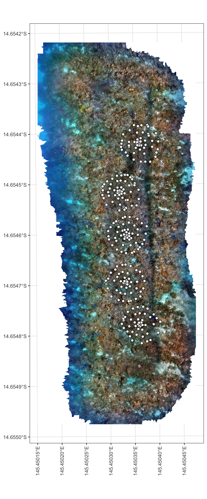
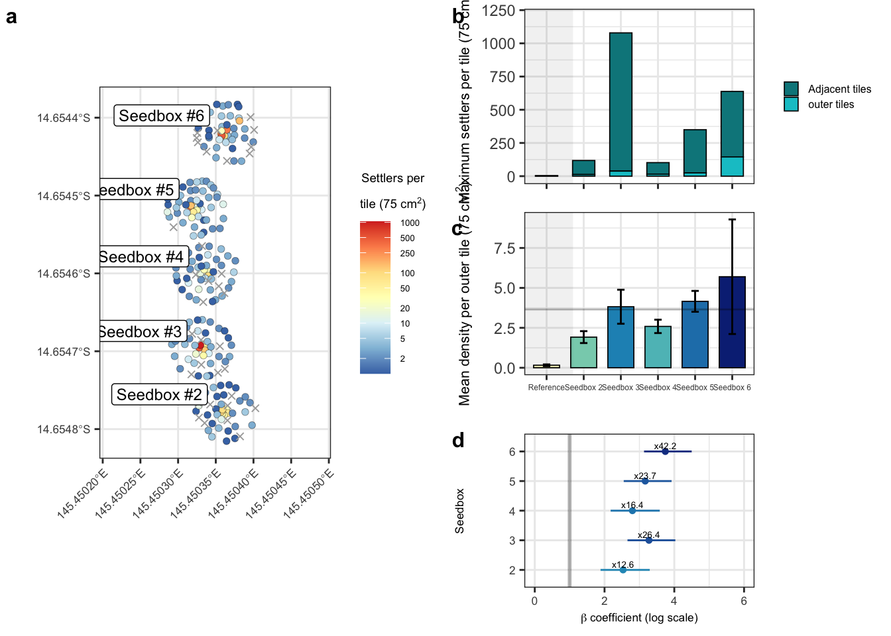
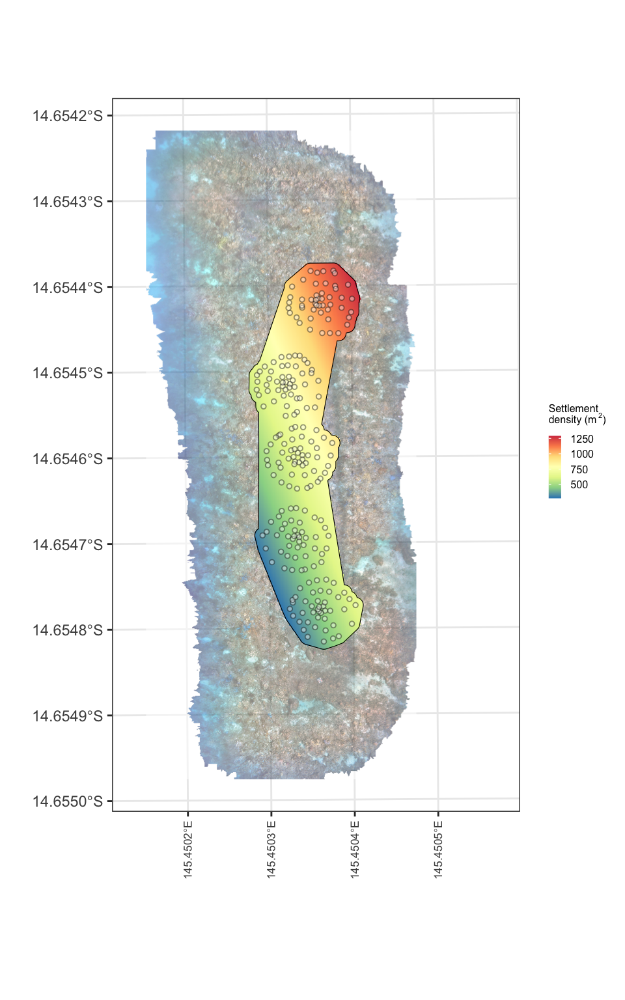
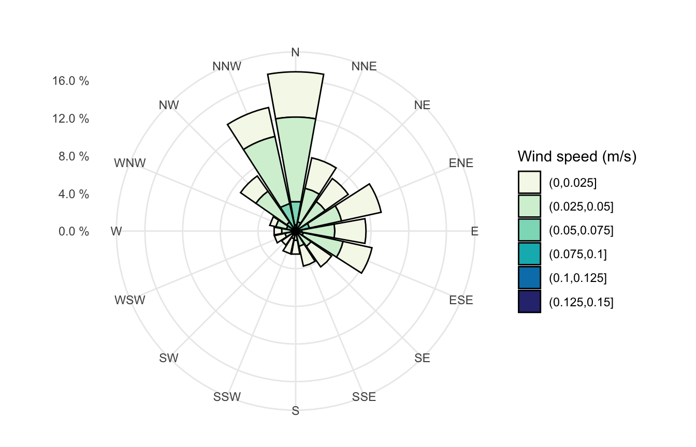
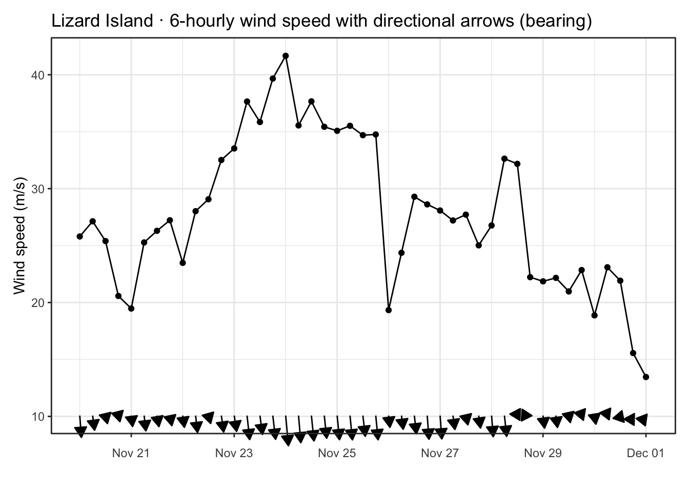
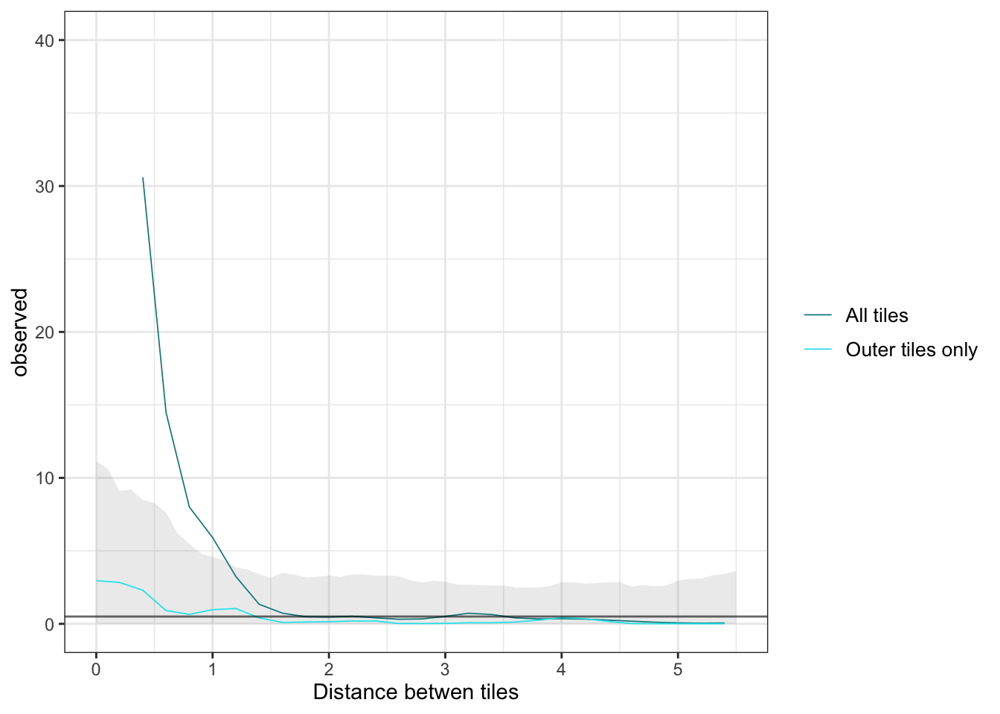

Codebase
Code via quarto::quarto_render() in ../quarto/, data via ../data/
All outputs are regenerated for fully reproducible research
Code
devtools::session_info()─ Session info ───────────────────────────────────────────────────────────────
setting value
version R version 4.4.2 (2024-10-31)
os macOS Sequoia 15.6.1
system aarch64, darwin20
ui X11
language (EN)
collate en_US.UTF-8
ctype en_US.UTF-8
tz Australia/Brisbane
date 2025-09-15
pandoc 3.7.0.2 @ /opt/homebrew/bin/ (via rmarkdown)
quarto 1.7.29 @ /usr/local/bin/quarto
─ Packages ───────────────────────────────────────────────────────────────────
package * version date (UTC) lib source
abind * 1.4-8 2024-09-12 [1] CRAN (R 4.4.1)
arrayhelpers 1.1-0 2020-02-04 [1] CRAN (R 4.4.0)
backports 1.5.0 2024-05-23 [1] CRAN (R 4.4.0)
bayesplot 1.13.0 2025-06-18 [1] CRAN (R 4.4.1)
bayestestR * 0.16.1 2025-07-01 [1] CRAN (R 4.4.1)
bridgesampling 1.1-2 2021-04-16 [1] CRAN (R 4.4.0)
brms * 2.23.0 2025-09-09 [1] CRAN (R 4.4.1)
Brobdingnag 1.2-9 2022-10-19 [1] CRAN (R 4.4.0)
broom * 1.0.9 2025-07-28 [1] CRAN (R 4.4.1)
broom.mixed * 0.2.9.6 2024-10-15 [1] CRAN (R 4.4.1)
cachem 1.1.0 2024-05-16 [1] CRAN (R 4.4.0)
cellranger 1.1.0 2016-07-27 [1] CRAN (R 4.4.0)
checkmate 2.3.2 2024-07-29 [1] CRAN (R 4.4.0)
class 7.3-23 2025-01-01 [1] CRAN (R 4.4.1)
classInt 0.4-11 2025-01-08 [1] CRAN (R 4.4.1)
cli 3.6.5 2025-04-23 [1] CRAN (R 4.4.1)
coda 0.19-4.1 2024-01-31 [1] CRAN (R 4.4.0)
codetools 0.2-20 2024-03-31 [1] CRAN (R 4.4.2)
conflicted * 1.2.0 2023-02-01 [1] CRAN (R 4.4.0)
curl 7.0.0 2025-08-19 [1] CRAN (R 4.4.1)
dataaimsr * 1.1.0 2025-06-01 [1] Github (ropensci/dataaimsr@1a6132e)
DBI 1.2.3 2024-06-02 [1] CRAN (R 4.4.0)
deldir 2.0-4 2024-02-28 [1] CRAN (R 4.4.0)
devtools 2.4.5 2022-10-11 [1] CRAN (R 4.4.0)
dichromat 2.0-0.1 2022-05-02 [1] CRAN (R 4.4.0)
digest 0.6.37 2024-08-19 [1] CRAN (R 4.4.1)
distributional 0.5.0 2024-09-17 [1] CRAN (R 4.4.1)
dotCall64 1.2 2024-10-04 [1] CRAN (R 4.4.1)
dplyr * 1.1.4 2023-11-17 [1] CRAN (R 4.4.0)
e1071 1.7-16 2024-09-16 [1] CRAN (R 4.4.1)
ellipsis 0.3.2 2021-04-29 [1] CRAN (R 4.4.0)
emmeans 1.11.2 2025-07-11 [1] CRAN (R 4.4.1)
estimability 1.5.1 2024-05-12 [1] CRAN (R 4.4.0)
evaluate 1.0.4 2025-06-18 [1] CRAN (R 4.4.1)
farver 2.1.2 2024-05-13 [1] CRAN (R 4.4.0)
fastmap 1.2.0 2024-05-15 [1] CRAN (R 4.4.0)
fields * 16.3.1 2025-03-08 [1] CRAN (R 4.4.1)
forcats * 1.0.0 2023-01-29 [1] CRAN (R 4.4.0)
fs 1.6.6 2025-04-12 [1] CRAN (R 4.4.1)
furrr 0.3.1 2022-08-15 [1] CRAN (R 4.4.0)
future 1.67.0 2025-07-29 [1] CRAN (R 4.4.1)
generics 0.1.4 2025-05-09 [1] CRAN (R 4.4.1)
ggdist 3.3.3 2025-04-23 [1] CRAN (R 4.4.1)
ggplot2 * 3.5.2 2025-04-09 [1] CRAN (R 4.4.1)
ggrepel 0.9.6 2024-09-07 [1] CRAN (R 4.4.1)
globals 0.18.0 2025-05-08 [1] CRAN (R 4.4.1)
glue 1.8.0 2024-09-30 [1] CRAN (R 4.4.1)
goftest 1.2-3 2021-10-07 [1] CRAN (R 4.4.0)
gtable 0.3.6 2024-10-25 [1] CRAN (R 4.4.1)
hms 1.1.3 2023-03-21 [1] CRAN (R 4.4.0)
htmltools 0.5.8.1 2024-04-04 [1] CRAN (R 4.4.1)
htmlwidgets 1.6.4 2023-12-06 [1] CRAN (R 4.4.0)
httpuv 1.6.16 2025-04-16 [1] CRAN (R 4.4.1)
httr 1.4.7 2023-08-15 [1] CRAN (R 4.4.0)
insight 1.3.1 2025-06-30 [1] CRAN (R 4.4.1)
janitor * 2.2.1 2024-12-22 [1] CRAN (R 4.4.1)
jsonlite 2.0.0 2025-03-27 [1] CRAN (R 4.4.1)
kableExtra * 1.4.0 2024-01-24 [1] CRAN (R 4.4.0)
KernSmooth 2.23-26 2025-01-01 [1] CRAN (R 4.4.1)
knitr 1.50 2025-03-16 [1] CRAN (R 4.4.1)
later 1.4.2 2025-04-08 [1] CRAN (R 4.4.1)
lattice 0.22-7 2025-04-02 [1] CRAN (R 4.4.1)
lifecycle 1.0.4 2023-11-07 [1] CRAN (R 4.4.0)
listenv 0.9.1 2024-01-29 [1] CRAN (R 4.4.0)
loo 2.8.0.9000 2024-11-25 [1] https://stan-dev.r-universe.dev (R 4.4.2)
lubridate * 1.9.4 2024-12-08 [1] CRAN (R 4.4.1)
magrittr 2.0.3 2022-03-30 [1] CRAN (R 4.4.0)
maps 3.4.3 2025-05-26 [1] CRAN (R 4.4.1)
MASS 7.3-65 2025-02-28 [1] CRAN (R 4.4.1)
Matrix 1.7-3 2025-03-11 [1] CRAN (R 4.4.1)
matrixStats 1.5.0 2025-01-07 [1] CRAN (R 4.4.1)
memoise 2.0.1 2021-11-26 [1] CRAN (R 4.4.0)
mgcv 1.9-3 2025-04-04 [1] CRAN (R 4.4.1)
mime 0.13 2025-03-17 [1] CRAN (R 4.4.1)
miniUI 0.1.2 2025-04-17 [1] CRAN (R 4.4.1)
multcomp 1.4-28 2025-01-29 [1] CRAN (R 4.4.1)
mvtnorm 1.3-3 2025-01-10 [1] CRAN (R 4.4.1)
nlme * 3.1-168 2025-03-31 [1] CRAN (R 4.4.1)
parallelly 1.45.1 2025-07-24 [1] CRAN (R 4.4.1)
parsedate 1.3.2 2024-12-09 [1] CRAN (R 4.4.1)
patchwork * 1.3.1 2025-06-21 [1] CRAN (R 4.4.1)
pillar 1.11.0 2025-07-04 [1] CRAN (R 4.4.1)
pkgbuild 1.4.8 2025-05-26 [1] CRAN (R 4.4.1)
pkgconfig 2.0.3 2019-09-22 [1] CRAN (R 4.4.0)
pkgload 1.4.0 2024-06-28 [1] CRAN (R 4.4.0)
polyclip 1.10-7 2024-07-23 [1] CRAN (R 4.4.0)
posterior * 1.6.1 2025-02-27 [1] CRAN (R 4.4.1)
profvis 0.4.0 2024-09-20 [1] CRAN (R 4.4.1)
promises 1.3.3 2025-05-29 [1] CRAN (R 4.4.1)
proxy 0.4-27 2022-06-09 [1] CRAN (R 4.4.0)
purrr * 1.1.0 2025-07-10 [1] CRAN (R 4.4.1)
R6 2.6.1 2025-02-15 [1] CRAN (R 4.4.1)
RColorBrewer 1.1-3 2022-04-03 [1] CRAN (R 4.4.0)
Rcpp * 1.1.0 2025-07-02 [1] CRAN (R 4.4.1)
RcppParallel 5.1.10 2025-01-24 [1] CRAN (R 4.4.1)
readr * 2.1.5 2024-01-10 [1] CRAN (R 4.4.0)
readxl * 1.4.5 2025-03-07 [1] CRAN (R 4.4.1)
remotes 2.5.0 2024-03-17 [1] CRAN (R 4.4.0)
rlang 1.1.6 2025-04-11 [1] CRAN (R 4.4.1)
rmarkdown 2.29 2024-11-04 [1] CRAN (R 4.4.1)
rnaturalearth 1.1.0 2025-07-28 [1] CRAN (R 4.4.1)
rpart * 4.1.24 2025-01-07 [1] CRAN (R 4.4.1)
rstantools 2.4.0 2024-01-31 [1] CRAN (R 4.4.0)
rstudioapi 0.17.1 2024-10-22 [1] CRAN (R 4.4.1)
sandwich 3.1-1 2024-09-15 [1] CRAN (R 4.4.1)
scales 1.4.0 2025-04-24 [1] CRAN (R 4.4.1)
sessioninfo 1.2.3 2025-02-05 [1] CRAN (R 4.4.1)
sf * 1.0-21 2025-05-15 [1] CRAN (R 4.4.1)
shiny 1.11.1 2025-07-03 [1] CRAN (R 4.4.1)
snakecase 0.11.1 2023-08-27 [1] CRAN (R 4.4.0)
spam * 2.11-1 2025-01-20 [1] CRAN (R 4.4.1)
spatstat * 3.4-0 2025-07-25 [1] CRAN (R 4.4.1)
spatstat.data * 3.1-6 2025-03-17 [1] CRAN (R 4.4.1)
spatstat.explore * 3.5-2 2025-07-22 [1] CRAN (R 4.4.1)
spatstat.geom * 3.5-0 2025-07-20 [1] CRAN (R 4.4.1)
spatstat.linnet * 3.3-1 2025-07-24 [1] CRAN (R 4.4.1)
spatstat.model * 3.4-0 2025-07-23 [1] CRAN (R 4.4.1)
spatstat.random * 3.4-1 2025-05-20 [1] CRAN (R 4.4.1)
spatstat.sparse 3.1-0 2024-06-21 [1] CRAN (R 4.4.0)
spatstat.univar * 3.1-4 2025-07-13 [1] CRAN (R 4.4.1)
spatstat.utils 3.1-5 2025-07-17 [1] CRAN (R 4.4.1)
stars * 0.6-8 2025-02-01 [1] CRAN (R 4.4.1)
stringi 1.8.7 2025-03-27 [1] CRAN (R 4.4.1)
stringr * 1.5.2 2025-09-08 [1] CRAN (R 4.4.1)
survival 3.8-3 2024-12-17 [1] CRAN (R 4.4.1)
svglite 2.2.1 2025-05-12 [1] CRAN (R 4.4.1)
svUnit 1.0.6 2021-04-19 [1] CRAN (R 4.4.0)
systemfonts 1.2.3 2025-04-30 [1] CRAN (R 4.4.1)
tensor 1.5.1 2025-06-17 [1] CRAN (R 4.4.1)
tensorA 0.36.2.1 2023-12-13 [1] CRAN (R 4.4.0)
terra * 1.8-60 2025-07-21 [1] CRAN (R 4.4.1)
textshaping 1.0.1 2025-05-01 [1] CRAN (R 4.4.1)
TH.data 1.1-3 2025-01-17 [1] CRAN (R 4.4.1)
tibble * 3.3.0 2025-06-08 [1] CRAN (R 4.4.1)
tidybayes * 3.0.7 2024-09-15 [1] CRAN (R 4.4.1)
tidyr * 1.3.1 2024-01-24 [1] CRAN (R 4.4.0)
tidyselect 1.2.1 2024-03-11 [1] CRAN (R 4.4.0)
tidyterra * 0.7.2 2025-04-14 [1] CRAN (R 4.4.1)
tidyverse * 2.0.0 2023-02-22 [1] CRAN (R 4.4.0)
timechange 0.3.0 2024-01-18 [1] CRAN (R 4.4.0)
tzdb 0.5.0 2025-03-15 [1] CRAN (R 4.4.1)
units 0.8-7 2025-03-11 [1] CRAN (R 4.4.1)
urlchecker 1.0.1 2021-11-30 [1] CRAN (R 4.4.0)
usethis 3.1.0 2024-11-26 [1] CRAN (R 4.4.1)
vctrs 0.6.5 2023-12-01 [1] CRAN (R 4.4.0)
viridisLite * 0.4.2 2023-05-02 [1] CRAN (R 4.4.0)
withr 3.0.2 2024-10-28 [1] CRAN (R 4.4.1)
xfun 0.52 2025-04-02 [1] CRAN (R 4.4.1)
xml2 1.4.0 2025-08-20 [1] CRAN (R 4.4.1)
xtable 1.8-4 2019-04-21 [1] CRAN (R 4.4.0)
yaml 2.3.10 2024-07-26 [1] CRAN (R 4.4.0)
zoo 1.8-14 2025-04-10 [1] CRAN (R 4.4.1)
[1] /Library/Frameworks/R.framework/Versions/4.4-arm64/Resources/library
* ── Packages attached to the search path.
──────────────────────────────────────────────────────────────────────────────Figure 2
Code
library(tidyverse)
library(janitor)
library(readxl)
library(sf)
library(terra)
library(tidyterra)
library(ggplot2)
# read tile data
tiles <- readxl::read_xlsx("../data/tiles.xlsx") |>
group_by(id) |>
summarise(plot=mean(plot), settlers=sum(count))
# import slow release pool controls
tiles_slrp <- read_xlsx("../data/data_SetTilesSlowReleaseExp3.xlsx") |>
clean_names() |>
rename(id=tile_number) |>
group_by(id) |>
summarise(settlers=sum(settler_count)) |>
mutate(seedbox=0) |> #, dsm=NA, height=NA) |>
drop_na(id)
# vectorise inner tiles adjacent to seedboxes
inner <- c(1217, 1268, 1253, 1121, 1207, 1240, 1021, 1291, 1217,
1084, 1039, 1040, 1213, 1254, 1029,
1099, 1034, 1284, 1027, 1252, 1056,
1073, 1086, 1002, 1005, 1179, 1047,
1187, 1104, 1149, 1130, 1197, 1127,
1194, 1193, 1107, 1191, 1175, 1178)
# read spatial data, add "signal" binary where count exceeds 80% CI of controls
seedbox <- rbind(
st_read("../data/Seedbox2.geojson", quiet=TRUE) |> mutate(seedbox=2) |> st_transform(32755),
st_read("../data/Seedbox3.geojson", quiet=TRUE) |> mutate(seedbox=3) |> st_transform(32755),
st_read("../data/Seedbox4.geojson", quiet=TRUE) |> mutate(seedbox=4) |> st_transform(32755),
st_read("../data/Seedbox5.geojson", quiet=TRUE) |> mutate(seedbox=5) |> st_transform(32755),
st_read("../data/Seedbox6.geojson", quiet=TRUE) |> mutate(seedbox=6) |> st_transform(32755)) |>
left_join(tiles |> select(-plot), by="id") |> drop_na(settlers) |>
mutate(signal = ifelse(settlers < t.test(tiles_slrp$settlers, conf.level = 0.80)$conf.int[[2]], "none", "signal"))
# import orthomosaic, downsample raster
orthomap <- rast("../data/orthophoto.tif")
# plot with ggplot
ggplot() + theme_bw() +
geom_spatraster_rgb(data=orthomap, alpha=1) +
geom_sf(data = seedbox, fill="white", shape=21, size=2, alpha=0.9) +
theme(axis.text.x = element_text(angle = 90, vjust = 0.5, hjust=1))
Figure 3
Code
library(patchwork)
library(broom)
# calculate hulls, generate summary tables
# get centroids of tiles
centroids <- seedbox %>%
group_by(seedbox) %>%
summarize(geometry = st_centroid(st_union(geometry)))
# filter to only outer tiles
seedbox_outer <- seedbox |> filter(!id %in% inner)
# make hulls and areas for plotting
seedbox_hull <- seedbox |> st_buffer(1.5) |> concaveman::concaveman(2,10) |> vect()
seedbox_area <- seedbox |> st_buffer(1) |> concaveman::concaveman(2,10)
# Calculate buffered bounding box for mapping
bbox <- st_bbox(seedbox)
bbox[1] <- bbox[1] - 5 # xmin
bbox[3] <- bbox[3] + 8 # xmax
bbox[2] <- bbox[2] - 2 # xmin
bbox[4] <- bbox[4] + 2 # xmax
# Convert to sf polygon for plotting
bbox_sf <- st_as_sfc(bbox)
# set breaks for heatmap z axis
breaks_vals <- c(2, 5, 10, 20, 50, 100, 250, 500, 1000)
# log settlers and add coords
seedbox_centroids_data <- seedbox |>
st_transform(4326) |>
mutate(settlers_log = log(settlers)) |>
bind_cols(st_coordinates(seedbox |> st_transform(4326)))
# summarise centroid for seedboxes
seedbox_centroids <- seedbox_centroids_data |>
group_by(seedbox) |>
summarise(geometry = st_centroid(st_union(geometry))) |>
st_as_sf()
seedbox_centroids <- seedbox_centroids |> bind_cols(st_coordinates(seedbox_centroids))
# generate summary data
summary_data <- seedbox |>
as.data.frame() |>
select(-geometry, -signal) |>
rbind(tiles_slrp) |>
mutate(seedbox=as.factor(seedbox)) |>
group_by(seedbox) |>
summarise(
settlers_mean = mean(settlers, na.rm = TRUE),
settlers_max = max(settlers, na.rm = TRUE),
settlers_se = sd(settlers, na.rm = TRUE) / sqrt(n()), # Standard error
.groups = "drop"
) |>
mutate(
lower_ci = settlers_mean - qt(0.80, df = n() - 1) * settlers_se, # Lower bound
upper_ci = settlers_mean + qt(0.80, df = n() - 1) * settlers_se # Upper bound
)
# generate summary plot
summary_data_plot <- seedbox_outer |>
as.data.frame() |>
select(-geometry, -signal) |>
rbind(tiles_slrp) |>
mutate(seedbox=as.factor(seedbox)) |>
group_by(seedbox) |>
summarise(
settlers_mean = mean(settlers, na.rm = TRUE),
settlers_max = max(settlers, na.rm = TRUE),
settlers_se = sd(settlers, na.rm = TRUE) / sqrt(n()), # Standard error
.groups = "drop"
) |>
mutate(
lower_ci = settlers_mean - qt(0.80, df = n() - 1) * settlers_se, # Lower bound
upper_ci = settlers_mean + qt(0.80, df = n() - 1) * settlers_se # Upper bound
) |>
mutate(seedbox = factor(seedbox, levels = 0:6, labels = c("Reference", paste0("Seedbox ", 1:6))))
# Calculate mean and 95% CI for settlers grouped by seedbox
summary_data_outer <- seedbox_outer |>
as.data.frame() |>
select(-geometry, -signal) |>
rbind(tiles_slrp) |>
mutate(seedbox=as.factor(seedbox)) |>
group_by(seedbox) |>
summarise(
settlers_mean = mean(settlers, na.rm = TRUE),
settlers_max = max(settlers, na.rm = TRUE),
settlers_se = sd(settlers, na.rm = TRUE) / sqrt(n()), # Standard error
.groups = "drop"
) |>
mutate(
lower_ci = settlers_mean - qt(0.80, df = n() - 1) * settlers_se, # Lower bound
upper_ci = settlers_mean + qt(0.80, df = n() - 1) * settlers_se # Upper bound
)
# Calculate mean and 95% CI for settlers grouped by seedbox
summary_data_merge <- seedbox_outer |>
as.data.frame() |>
select(-geometry, -signal) |>
rbind(tiles_slrp) |>
mutate(seedbox=as.factor(seedbox)) |>
summarise(
settlers_mean = mean(settlers, na.rm = TRUE),
settlers_max = max(settlers, na.rm = TRUE),
settlers_se = sd(settlers, na.rm = TRUE) / sqrt(n()), # Standard error
.groups = "drop"
) |>
mutate(
lower_ci = settlers_mean - qt(0.80, df = n() - 1) * settlers_se, # Lower bound
upper_ci = settlers_mean + qt(0.80, df = n() - 1) * settlers_se # Upper bound
)
#
summary_data$group <- "inner"
summary_data_outer$group <- "outer"
combined_data <- bind_rows(summary_data, summary_data_outer) |>
mutate(seedbox = factor(seedbox, levels = 0:6, labels = c("reference", paste0("seedbox ", 1:6))))
# t-test for outer tiles
seedbox_outer_ttest <- seedbox_outer$settlers %>%
t.test() %>%
tidy() %>%
select(estimate, conf.low, conf.high)
# t-test for tiles
tiles_ttest <- tiles_slrp$settlers %>%
t.test() %>%
tidy() %>%
select(estimate, conf.low, conf.high)
library(brms)
library(tidybayes)
library(posterior)
library(bayestestR)
library(broom.mixed)
seedbox_outer_brms <- seedbox_outer |> as.data.frame() |>
select(-geometry, -signal) |>
rbind(tiles_slrp) |>
mutate(seedbox=as.factor(seedbox)) |>
mutate(type = ifelse(seedbox=="0", "ctrl", "seed"))
# brms model the outer seedbox tiles
zi_model_outer <- brm(
settlers ~ seedbox,
family = zero_inflated_poisson(),
data = seedbox_outer_brms,
chains = 4,
cores = 4,
iter = 2000,
silent=2,
refresh = 0
)Running /Library/Frameworks/R.framework/Resources/bin/R CMD SHLIB foo.c
using C compiler: ‘Apple clang version 17.0.0 (clang-1700.0.13.5)’
using SDK: ‘MacOSX15.5.sdk’
/usr/bin/clang -I"/Library/Frameworks/R.framework/Resources/include" -DNDEBUG -I"/Library/Frameworks/R.framework/Versions/4.4-arm64/Resources/library/Rcpp/include/" -I"/Library/Frameworks/R.framework/Versions/4.4-arm64/Resources/library/RcppEigen/include/" -I"/Library/Frameworks/R.framework/Versions/4.4-arm64/Resources/library/RcppEigen/include/unsupported" -I"/Library/Frameworks/R.framework/Versions/4.4-arm64/Resources/library/BH/include" -I"/Library/Frameworks/R.framework/Versions/4.4-arm64/Resources/library/StanHeaders/include/src/" -I"/Library/Frameworks/R.framework/Versions/4.4-arm64/Resources/library/StanHeaders/include/" -I"/Library/Frameworks/R.framework/Versions/4.4-arm64/Resources/library/RcppParallel/include/" -I"/Library/Frameworks/R.framework/Versions/4.4-arm64/Resources/library/rstan/include" -DEIGEN_NO_DEBUG -DBOOST_DISABLE_ASSERTS -DBOOST_PENDING_INTEGER_LOG2_HPP -DSTAN_THREADS -DUSE_STANC3 -DSTRICT_R_HEADERS -DBOOST_PHOENIX_NO_VARIADIC_EXPRESSION -D_HAS_AUTO_PTR_ETC=0 -include '/Library/Frameworks/R.framework/Versions/4.4-arm64/Resources/library/StanHeaders/include/stan/math/prim/fun/Eigen.hpp' -D_REENTRANT -DRCPP_PARALLEL_USE_TBB=1 -I/opt/R/arm64/include -fPIC -O3 -Wall -isysroot /Library/Developer/CommandLineTools/SDKs/MacOSX.sdk -c foo.c -o foo.o
In file included from <built-in>:1:
In file included from /Library/Frameworks/R.framework/Versions/4.4-arm64/Resources/library/StanHeaders/include/stan/math/prim/fun/Eigen.hpp:22:
In file included from /Library/Frameworks/R.framework/Versions/4.4-arm64/Resources/library/RcppEigen/include/Eigen/Dense:1:
In file included from /Library/Frameworks/R.framework/Versions/4.4-arm64/Resources/library/RcppEigen/include/Eigen/Core:19:
/Library/Frameworks/R.framework/Versions/4.4-arm64/Resources/library/RcppEigen/include/Eigen/src/Core/util/Macros.h:679:10: fatal error: 'cmath' file not found
679 | #include <cmath>
| ^~~~~~~
1 error generated.
make: *** [foo.o] Error 1Code
# # Extract posterior draws for coefficients
summary_draws_outer<- zi_model_outer %>%
spread_draws(b_seedbox2, b_seedbox3, b_seedbox4, b_seedbox5, b_seedbox6) |>
pivot_longer(cols = starts_with("b_seedbox"),
names_to = "seedbox",
values_to = "estimate") %>%
mutate(seedbox = gsub("b_seedbox", "", seedbox)) %>% # Remove "b_" prefix
group_by(seedbox) %>%
median_qi(estimate)
summary_draws_outer_IRR <- summary_draws_outer %>%
mutate(
effect_size = exp(estimate),
effect_lower = exp(.lower),
effect_upper = exp(.upper)
)Code
# plot effects from draws
effects <- ggplot(summary_draws_outer, aes(x = seedbox, fill=estimate, color=estimate, y = (estimate), ymin = (.lower), ymax = (.upper))) +
geom_pointrange(size=0.3, shape=21, stroke=0.5, show.legend=FALSE) +
geom_text(aes(label=paste0("x",round(exp(estimate),1))), size=1.8,color="black", nudge_x = 0.2) +
scale_color_distiller(
palette = "YlGnBu",
direction = 1,
limits = c(0, 4), # set desired range
oob = scales::squish # squish out-of-bounds to nearest limit
) +
scale_fill_distiller(
palette = "YlGnBu",
direction = 1,
limits = c(0, 4), # set desired range
oob = scales::squish # squish out-of-bounds to nearest limit
) +
coord_flip() +
geom_hline(yintercept=1, linewidth=1, alpha=0.3) +
ylim(0,6) +
labs(#subtitle = "outer tiles",
x = "Seedbox",
y = expression(beta~"coefficient (log scale)")) +
theme_bw() +
theme(
axis.text.x = element_text(size = 6.5),
axis.text.y = element_text(size=6.5),
axis.title = element_text(size=6.5),
axis.title.y = element_text(margin = margin(r = 5)) # reduce right margin of y-axis title
)
bbox <- st_bbox(seedbox)
bbox[1] <- bbox[1] - 8 # xmin - 20
bbox[3] <- bbox[3] + 9 # xmax + 20
bbox[2] <- bbox[2] - 0 # xmin - 20
bbox[4] <- bbox[4] + 0 # xmax + 20
bbox_sf <- st_as_sfc(bbox)
# Add to plot
a <- ggplot() + theme_bw() +
geom_sf(data=seedbox |> st_transform(4326) |> dplyr::filter(signal=="signal"), aes(fill = log(settlers)), shape = 21, stroke=0.1, size = 1.8, show.legend = TRUE) +
geom_sf(data=seedbox |> st_transform(4326) |> dplyr::filter(signal=="none"), shape = 4, fill="white", color="darkgrey", size = 1.6, show.legend = TRUE) +
geom_label(data = seedbox_centroids |> as.data.frame(), aes(X, Y, label = paste0("Seedbox #", seedbox)), size=3.2, nudge_x=-0.000084, nudge_y = 0.000022) +
geom_sf(data = bbox_sf, fill = NA, color = NA, linewidth = 0.5) +
scale_fill_distiller(
name = bquote(atop("Settlers per", "tile (75 cm"^2*")")),
palette = "RdYlBu",
direction = -1,
na.value = "transparent",
#values = c(2,1250),
breaks = log(breaks_vals),
labels = breaks_vals
) +
theme(
axis.text.x = element_text(angle = 45, vjust = 1, hjust = 1, size = 6.5),
axis.text.y = element_text(size = 6.5),
legend.position.inside = c(0.85, 0.35),
legend.title = element_text(size=7),
legend.text = element_text(size=5),
legend.background = element_blank(),
legend.box.background = element_blank(),
legend.key = element_blank(),
legend.direction = "vertical"
) + xlab("") + ylab("")
b <- ggplot(combined_data, aes(x = seedbox, y = settlers_max, fill = group)) +
geom_bar(stat = "identity", position = "stack", color = "black", width = 0.6, linewidth=0.3) +
scale_fill_manual(
values = c("inner" = "turquoise4", "outer" = "turquoise3"),
labels = c("inner" = "Adjacent tiles", "outer" = "outer tiles"),
name = NULL
) +
labs(x="", y = expression("Maximum settlers per tile (75 cm"^2*")"), " (75cm2)") +
geom_vline(xintercept = 1, linewidth = 14, alpha=0.06) +
ylim(0, 1200) +
theme_bw() +
theme(
axis.text.x = element_blank(), #(angle = 45, vjust = 0.9, hjust = 1),
axis.title.y = element_text(size=8),
legend.position.inside = c(0.30, 0.92),
legend.background = element_blank(),
legend.box.background = element_blank(),
legend.key = element_blank(),
legend.text = element_text(size = 6),
legend.key.size = unit(0.6, "lines"),
plot.margin = margin(5, 5, 0, 5)
)
c <- ggplot() + theme_bw() +
geom_bar(data = summary_data_plot, aes(x = seedbox, y = settlers_mean, fill = settlers_mean),
linewidth = 0.3, show.legend = FALSE, stat = "identity", color = "black", width = 0.7) +
geom_hline(yintercept = mean(seedbox_outer$settlers), alpha = 0.3) +
geom_errorbar(data = summary_data_plot, aes(x = seedbox, y = settlers_mean,
ymin = settlers_mean - settlers_se,
ymax = settlers_mean + settlers_se), width = 0.2) +
scale_fill_distiller(palette = "YlGnBu", direction = 1) +
geom_vline(xintercept = 1, linewidth = 14, alpha = 0.06) +
labs(
x = "",
y = expression("Mean density per outer tile (75 cm"^2*")")
) +
theme(
axis.text.x = element_text(angle = 0, vjust = 0.9, hjust = 0.5, size = 4.5),
axis.title.y = element_text(size = 8),
plot.margin = margin(t = 0, r = 5, b = 5, l = 5)
)
fig3_plot <- cowplot::plot_grid(cowplot::plot_grid(a, labels=c("a"), label_size=12) , cowplot::plot_grid(b,c,effects, labels = c("b", "c", "d"), align = "v", label_size = 12, nrow=3))
fig3_plot
Figure 4
Code
library(fields)
library(stars)
library(terra)
library(tidyterra)
library(tidyverse)
library(spatstat)
# import orthomosaic, downsample raster
orthomap <- rast("../data/orthophoto.tif")
# Buffer first to exten<- spatial domain
seedbox_outer_buf <- seedbox_outer |> st_buffer(10)
# Create a grid over the buffered area
grd <- seedbox_outer_buf |>
st_bbox() |>
st_as_stars(dx = 0.1)
# extract grid coordinates for prediction
grd_coords <- as.data.frame(st_coordinates(grd))
# extract buffered coordinates for fitting the TPS
coords <- st_coordinates(seedbox_outer)
# fit the TPS using unbuffered coordinates, extend grid
tps_model <- Tps(coords, seedbox_outer$settlers,
method = "REML",
lambda = 150)Warning:
Grid searches over lambda (nugget and sill variances) with minima at the endpoints:
(REML) Restricted maximum likelihood
minimum at right endpoint lambda = 918.891 (eff. df= 3.000899 )Code
grd_coords$predicted_settlers <- predict(tps_model, as.matrix(grd_coords[, c("x", "y")]))
grd$predicted_settlers <- array(grd_coords$predicted_settlers, dim = dim(grd))
tps_raster <- rast(grd["predicted_settlers"])
seed_area <- seedbox |> st_buffer(1) |> concaveman::concaveman(2,10)
# expand rugosity
reef_area_cm2 <- 1 * 100^2 # 1 m² to cm²
rugosity <- 1.67 # rugosity factor
tile_area_cm2 <- 70 # single tile area
surface_area_cm2 <- reef_area_cm2 * rugosity * 0.8
n_tiles <- surface_area_cm2 / tile_area_cm2
# mask and crop raster
masked_raster <- mask(tps_raster, seed_area, updatevalue = NA)
cropped_raster <- crop(masked_raster, ext(masked_raster)) |>
as.data.frame(xy = TRUE, na.rm = TRUE) |>
mutate(predicted_settlers = predicted_settlers * n_tiles)
bbox2 <- st_bbox(terra::ext(orthomap), crs=st_crs(orthomap))
bbox2[1] <- bbox2[1] - 2 # xmin - 20
bbox2[3] <- bbox2[3] + 11 # xmax + 20
bbox2[2] <- bbox2[2] - 0 # xmin - 20
bbox2[4] <- bbox2[4] + 0 # xmax + 20
bbox2_sf <- st_as_sfc(bbox2)
Figure_4 <- ggplot() + theme_bw() +
geom_sf(data = bbox2_sf, fill = NA, color = NA, linewidth = 0.5) +
geom_spatraster_rgb(data=orthomap, alpha=0.5) +
geom_tile(data = cropped_raster, aes(x = x, y = y, fill = predicted_settlers), alpha = 1) +
scale_fill_distiller(name = bquote("Settlement\ndensity (m"^2*")"), palette="Spectral", na.value = "transparent") +
geom_sf(data = seedbox, fill="white", shape=21, size=1, alpha=0.4) +
geom_sf(data=seedbox_area, fill=NA, color="black", linewidth=0.2) +
theme(axis.text.x = element_text(angle = 90, vjust = 0.5, hjust=1)) +
theme(
# axis.text.y = element_blank(),
axis.text.x = element_text(angle = 90, vjust = 0.5, hjust = 1, size = 6.5),
legend.position.inside = c(0.85, 0.35),
legend.title = element_text(size=6),
legend.background = element_blank(),
legend.text = element_text(size = 6),
legend.key.size = unit(0.5, "lines"),
legend.box.background = element_blank(),
#legend.key = element_blank(),
legend.direction = "vertical"
) + xlab("") + ylab("")
Figure_4
Code
#ggsave("data/Figure4.pdf", plot = Figure_4, device = "pdf", width = 5, height = 10)Code
library(zoo)
ggwindrose <- function(speed, direction, n_directions = 8, n_speeds = 5,
speed_cuts = NA, col_pal = "GnBu",
legend_title = "Wind speed (m/s)", calm_wind = 0,
n_col = 1, facet = NULL, plot_title = "",
...) {
if (missing(speed)) {
stop("Speed can't be missing")
}
if (missing(direction)) {
stop("Direction can't be missing")
}
include_facet <- !is.null(facet)
if (include_facet) {
if (!is.character(facet) && !is.factor(facet)) {
stop("The facet variable needs to be character or factor")
}
if (length(facet) == 1) {
facet <- rep(facet, length(speed))
}
if (length(facet) != length(speed)) {
stop("The facet variable must be the same length as the wind speeds")
}
}
if (!is.numeric(speed)) {
stop("Wind speeds need to be numeric")
}
if (!is.numeric(direction)) {
stop("Wind directions need to be numeric")
}
if (length(speed) != length(direction)) {
stop("Wind speeds and directions must be the same length")
}
if (any((direction > 360 | direction < 0),
na.rm = TRUE
)) {
stop("Wind directions can't be outside the interval [0, 360]")
}
if (!is.numeric(n_directions) || length(n_directions) != 1) {
stop("n_directions must be a numeric vector of length 1")
}
if (!is.numeric(n_speeds) || length(n_speeds) != 1) {
stop("n_speeds must be a numeric vector of length 1")
}
if (!is.numeric(calm_wind) || length(calm_wind) != 1) {
stop("calm_wind must be a numeric vector of length 1")
}
if ((!is.character(legend_title) && !is.expression(
legend_title
)) || length(legend_title) != 1) {
stop("Legend title must be a single character string or expression")
}
if (!col_pal %in% hcl.pals()) {
stop("`col_pal` should be one of the palettes defined on `hc.pals()`")
}
if (any(!is.na(speed_cuts)) && !is.numeric(speed_cuts)) {
stop("`speed_cuts` should be numeric or NA")
}
optimal_n_dir <- c(4, 8, 16)
if (is.na(match(n_directions, optimal_n_dir))) {
n_directions <-
optimal_n_dir[which.min(abs(n_directions - optimal_n_dir))]
message(
"Using the closest optimal number of wind directions (",
n_directions,
")"
)
}
dir_labels <- switch(as.character(n_directions),
"4" = c("N", "E", "S", "W"),
"8" = c("N", "NE", "E", "SE", "S", "SW", "W", "NW"),
"16" = c(
"N", "NNE", "NE", "ENE", "E", "ESE", "SE", "SSE", "S", "SSW", "SW",
"WSW", "W", "WNW", "NW", "NNW"
)
)
# Factor variable for wind direction intervals
dir_bin_width <- 360 / n_directions
dir_bin_cuts <-
seq(dir_bin_width / 2, 360 - dir_bin_width / 2, dir_bin_width)
dir_intervals <-
findInterval(c(direction, dir_bin_cuts), dir_bin_cuts)
dir_intervals[dir_intervals == n_directions] <- 0
factor_labs <-
paste(c(tail(dir_bin_cuts, 1), head(dir_bin_cuts, -1)),
dir_bin_cuts,
sep = ", "
)
dir_bin <- head(
factor(dir_intervals, labels = paste0("(", factor_labs, "]")),
-n_directions
)
# Factor variable for wind speed intervals
if (is.numeric(speed_cuts)) {
if (min(speed) < min(speed_cuts)) {
speed_cuts <- c(min(speed), speed_cuts)
}
if (max(speed) > max(speed_cuts)) {
speed_cuts <- c(speed_cuts, max(speed))
}
speed_cuts <- sort(unique(speed_cuts))
spd_bin <- cut(speed, speed_cuts)
} else {
spd_bin <- ggplot2::cut_interval(speed, n_speeds)
}
# New palette
spd_cols <-
hcl.colors(length(levels(spd_bin)), col_pal, rev = TRUE)
if (length(spd_cols) != length(levels(spd_bin))) {
spd_bin <- ggplot2::cut_interval(speed, length(spd_cols))
}
# Dataframe suitable for plotting
if (include_facet) {
ggplot_df <- as.data.frame(table(dir_bin, spd_bin, facet))
ggplot_df$proportion <- unlist(
by(
ggplot_df$Freq,
ggplot_df$facet, function(x) {
x / sum(x)
}
),
use.names = FALSE
)
} else {
ggplot_df <- data.frame(table(dir_bin, spd_bin))
ggplot_df$proportion <- ggplot_df$Freq / sum(ggplot_df$Freq)
}
## Draw plot
windrose_plot <- ggplot2::ggplot(
data = ggplot_df,
ggplot2::aes_string(
x = "dir_bin",
fill = "spd_bin",
y = "proportion"
)
) +
ggplot2::geom_bar(stat = "identity", color="black") +
ggplot2::scale_x_discrete(
breaks = levels(ggplot_df$dir_bin)[seq(1, n_directions, 1)],
labels = dir_labels,
drop = FALSE
) +
ggplot2::scale_fill_manual(name = legend_title, values = spd_cols) +
ggplot2::coord_polar(start = 2 * pi - pi / n_directions) +
ggplot2::scale_y_continuous(
labels = function(values) {
values <- sprintf("%0.1f %%", values * 100)
return(values)
}
) +
ggplot2::theme_minimal() +
ggplot2::theme(axis.title = ggplot2::element_blank()) +
ggplot2::labs(title = plot_title)
if (include_facet) {
windrose_plot <-
windrose_plot + ggplot2::facet_wrap(~facet, ncol = n_col)
}
return(windrose_plot)
}
acdc <- read.csv("../data/S103288A017_LSDTrial27N_A0.csv", sep = ";") |>
janitor::clean_names() |>
mutate(date_time = dmy_hms(date_time)) |>
# select(date_time, speed_1_0_3m, dir_1_0_3m) |>
dplyr::filter(date_time > ymd_hms("2024-11-27 00:00:00")) |>
dplyr::filter(date_time < ymd_hms("2024-11-28 06:00:00")) |>
select(date_time, starts_with("speed_"), starts_with("dir_")) |>
pivot_longer(
cols = -date_time,
names_to = c(".value", "depth"),
names_pattern = "(speed|dir)_(.*)"
) |>
mutate(depth = str_extract(depth, "(?<=_)[0-9_]+(?=m)"),
depth = str_replace_all(depth, "_", "."),
depth = parse_number(depth))
# extract direction and speed
dir_b <- acdc |>
dplyr::filter(depth < 2, date_time > ymd_hms("2024-11-27 11:02:00"),
date_time < ymd_hms("2024-11-27 22:05:00")) |>
pull(dir)
speed_b <- acdc |>
dplyr::filter(depth < 2, date_time > ymd_hms("2024-11-27 11:02:00"),
date_time < ymd_hms("2024-11-27 22:05:00")) |>
pull(speed)
# plot
windrose <- ggwindrose(speed_b, dir_b, n_directions = 16, speed_cuts = c(0, 0.025, 0.05, 0.075, 0.1, 0.125, 0.15),
n_speeds = 6)
windrose
Table S1
Code
table_s1 <- as.data.frame(fixef(zi_model_outer, probs = c(0.05, 0.95))) |>
rownames_to_column("Parameter") |>
rename(
Estimate = Estimate,
Error = Est.Error,
`Lower CI (95%)` = Q5,
`Upper CI (95%)` = Q95
) |>
mutate(rhat = rhat(zi_model_outer, variables = brms_pars)[1:6]) |>
mutate(ess = effective_sample(zi_model_outer)[,3]) |>
mutate(across(where(is.numeric), ~ round(.x, 2)))
library(kableExtra)
table_s1 %>%
kbl() %>%
kable_styling()| Parameter | Estimate | Error | Lower CI (95%) | Upper CI (95%) | rhat | ess |
|---|---|---|---|---|---|---|
| Intercept | -1.74 | 0.34 | -2.34 | -1.22 | 1.01 | 699 |
| seedbox2 | 2.55 | 0.36 | 2.00 | 3.17 | 1.01 | 830 |
| seedbox3 | 3.29 | 0.35 | 2.75 | 3.90 | 1.01 | 732 |
| seedbox4 | 2.82 | 0.35 | 2.28 | 3.42 | 1.01 | 891 |
| seedbox5 | 3.19 | 0.35 | 2.65 | 3.79 | 1.01 | 755 |
| seedbox6 | 3.77 | 0.35 | 3.23 | 4.38 | 1.01 | 773 |
Figure S1
Code
library(dataaimsr)
library(dplyr)
library(lubridate)
library(ggplot2)
library(grid) # for arrow()
# --- fetch 6-hourly means ---
lizard_wind_speed <- aims_data("weather", api_key = "KNJ8y0lDup7m9ODBUwIXVFSx1EAiz0p91qDUlSld",
filters = list(series_id = 3484,
from_date = "2024-11-20",
thru_date = "2024-12-01")) |>
mutate(hour6 = floor_date(time, "6 hours")) |>
group_by(hour6) |>
summarise(mean_speed = mean(qc_val, na.rm = TRUE), .groups = "drop")
lizard_wind_direction <- aims_data("weather", api_key = "KNJ8y0lDup7m9ODBUwIXVFSx1EAiz0p91qDUlSld",
filters = list(series_id = 3485,
from_date = "2024-11-20",
thru_date = "2024-12-01")) |>
mutate(hour6 = floor_date(time, "6 hours")) |>
group_by(hour6) |>
summarise(mean_dir_deg = mean(qc_val, na.rm = TRUE), .groups = "drop")
# --- join + arrow endpoints from bearings (bearing: 0°=N/up, 90°=E/right) ---
wind_6h <- lizard_wind_speed |>
left_join(lizard_wind_direction, by = "hour6")
# baseline for arrows just below min speed
ymin <- min(wind_6h$mean_speed, na.rm = TRUE)
yrng <- diff(range(wind_6h$mean_speed, na.rm = TRUE))
pad <- if (is.finite(yrng) && yrng > 0) 0.12 * yrng else 1
label_y <- ymin - pad
# arrow lengths (in data units): time component in seconds, y component in speed units
# scale by speed so stronger winds have longer arrows (cap to avoid huge arrows)
len_time_sec_base <- 60 * 60 * 1.5 # ~1.5h along x at max scale
len_y_base <- if (is.finite(yrng) && yrng > 0) 0.18 * yrng else 1
wind_6h <- wind_6h |>
mutate(
dir_deg = mean_dir_deg %% 360,
phi_deg = 90 - dir_deg, # convert bearing to math angle (0° = +x)
phi = pi * phi_deg / 180,
scale_s = pmin(mean_speed / max(mean_speed, na.rm = TRUE), 1),
dx_sec = len_time_sec_base * scale_s * cos(phi),
dy = len_y_base * scale_s * sin(phi),
x0 = hour6,
y0 = label_y,
x1 = hour6 + dx_sec, # POSIXct + seconds
y1 = label_y + dy
)
# --- plot: speed line + directional arrows below ---
ggplot() + theme_bw() +
geom_line(data = wind_6h, aes(x = hour6, y = mean_speed)) +
geom_point(data = wind_6h, aes(x = hour6, y = mean_speed)) +
geom_segment(
data = wind_6h,
aes(x = x0, y = y0, xend = x1, yend = y1),
arrow = arrow(length = unit(3, "mm"), type = "closed"),
linewidth = 0.5
) +
labs(x = NULL, y = "Wind speed (m/s)",
title = "Lizard Island · 6-hourly wind speed with directional arrows (bearing)") +
coord_cartesian(ylim = c(label_y, NA), clip = "off") +
theme(plot.margin = margin(10, 10, 24, 10),
axis.text.x = element_text(margin = margin(t = 8)))
Code
library(dataaimsr)
library(dplyr)
library(lubridate)
library(ggplot2)
library(grid) # for arrow()
# --- fetch 6-hourly means ---
lizard_wind_speed <- aims_data("weather",
filters = list(series_id = 3484,
from_date = "2024-11-20",
thru_date = "2024-12-01")) |>
mutate(hour6 = floor_date(time, "6 hours")) |>
group_by(hour6) |>
summarise(mean_speed = mean(qc_val, na.rm = TRUE), .groups = "drop")
lizard_wind_direction <- aims_data("weather",
filters = list(series_id = 3485,
from_date = "2024-11-20",
thru_date = "2024-12-01")) |>
mutate(hour6 = floor_date(time, "6 hours")) |>
group_by(hour6) |>
summarise(mean_dir_deg = mean(qc_val, na.rm = TRUE), .groups = "drop")
# --- join + arrow endpoints from bearings (bearing: 0°=N/up, 90°=E/right) ---
wind_6h <- lizard_wind_speed |>
left_join(lizard_wind_direction, by = "hour6")
# baseline for arrows just below min speed
ymin <- min(wind_6h$mean_speed, na.rm = TRUE)
yrng <- diff(range(wind_6h$mean_speed, na.rm = TRUE))
pad <- if (is.finite(yrng) && yrng > 0) 0.12 * yrng else 1
label_y <- ymin - pad
# arrow lengths (in data units): time component in seconds, y component in speed units
# scale by speed so stronger winds have longer arrows (cap to avoid huge arrows)
len_time_sec_base <- 60 * 60 * 1.5 # ~1.5h along x at max scale
len_y_base <- if (is.finite(yrng) && yrng > 0) 0.18 * yrng else 1
wind_6h <- wind_6h |>
mutate(
dir_deg = mean_dir_deg %% 360,
phi_deg = 90 - dir_deg, # convert bearing to math angle (0° = +x)
phi = pi * phi_deg / 180,
scale_s = pmin(mean_speed / max(mean_speed, na.rm = TRUE), 1),
dx_sec = len_time_sec_base * scale_s * cos(phi),
dy = len_y_base * scale_s * sin(phi),
x0 = hour6,
y0 = label_y,
x1 = hour6 + dx_sec, # POSIXct + seconds
y1 = label_y + dy
)
# --- plot: speed line + directional arrows below ---
ggplot() + theme_bw() +
geom_line(data = wind_6h, aes(x = hour6, y = mean_speed)) +
geom_point(data = wind_6h, aes(x = hour6, y = mean_speed)) +
geom_segment(
data = wind_6h,
aes(x = x0, y = y0, xend = x1, yend = y1),
arrow = arrow(length = unit(3, "mm"), type = "closed"),
linewidth = 0.5
) +
labs(x = NULL, y = "Wind speed (m/s)",
title = "Lizard Island · 6-hourly wind speed with directional arrows (bearing)") +
coord_cartesian(ylim = c(label_y, NA), clip = "off") +
theme(plot.margin = margin(10, 10, 24, 10),
axis.text.x = element_text(margin = margin(t = 8)))Figure S2
Code
### Construct spatial arrays
library(spatstat)
library(purrr)
set.seed(101)
# Convert to ppp with settler mark
ppp_settlers <- as.ppp(
st_coordinates(seedbox),
W = as.owin(st_bbox(seedbox))
)
marks(ppp_settlers) <- (seedbox$settlers)
Kmark_result <- markcorr(ppp_settlers, correction = "Ripley", r = seq(0, 6, by = 0.2))
seedbox_subset <- seedbox |> filter(id %in% inner)
ppp_settlers_subset <- as.ppp(
st_coordinates(seedbox_subset),
W = as.owin(st_bbox(seedbox_subset))
)
marks(ppp_settlers_subset) <- (seedbox_subset$settlers)
Kmark_result_subset <- markcorr(ppp_settlers_subset, correction = "Ripley", r = seq(0, 6, by = 0.2))
# combine
kmm_df <- as.data.frame(Kmark_result)[, c("r", "iso", "theo")]
names(kmm_df) <- c("r", "observed", "theoretical")
kmm_df_subset <- as.data.frame(Kmark_result_subset)[, c("r", "iso", "theo")]
names(kmm_df_subset) <- c("r", "observed", "theoretical")
kmm_plot <- rbind(kmm_df |> mutate(factor="all_tiles"),
kmm_df_subset |> mutate(factor="outer_array")
)
coords <- st_coordinates(seedbox)
win <- as.owin(st_bbox(seedbox))
# Repeat 999 times
simulated_kmm <- map_dfr(1:999, function(i) {
ppp <- as.ppp(coords, W = win)
marks(ppp) <- sample(seedbox$settlers)
kmm <- markcorr(ppp, correction = "Ripley", r = seq(0, 6, by = 0.1))
df <- as.data.frame(kmm)[, c("r", "iso")]
df$id <- i
names(df) <- c("r", "observed", "id")
df
})
# Compute percentiles for each r
envelope_bounds <- simulated_kmm |>
group_by(r) |>
summarise(
lower = quantile(observed, 0.05),
upper = quantile(observed, 0.99),
.groups = "drop"
) |> mutate(lower=0)
kmm_df$id <- 0
Figure_S1 <- ggplot() + theme_bw() + xlim(round(min(nndist(ppp_settlers)), 1), 6) +
geom_ribbon(data = envelope_bounds, aes(x = r, ymin = lower, ymax = upper), fill = "grey20", alpha=0.1) +
geom_line(data=kmm_plot, aes(r, observed, color=factor), linewidth=0.3) +
scale_y_continuous(limits=c(0, 40), breaks=seq(-10, 40, 10)) +
scale_x_continuous(limits=c(0, 5.5), breaks=seq(0, 5.5, 1)) + xlab("Distance betwen tiles") +
geom_hline(yintercept = 0.5, linewidth = 0.5, alpha=0.6, linetype = "solid") +
#geom_hline(yintercept = 0, linewidth = 0.5, alpha=0.8, linetype = "solid") +
scale_color_manual(
labels = c("all_tiles" = "All tiles", "outer_array" = "Outer tiles only"),
values = c("all_tiles" = "turquoise4", "outer_array" = "turquoise2"),
name = NULL
) +
theme(
legend.position.inside.inside = c(0.75, 0.85),
legend.background = element_blank(),
legend.box.background = element_blank(),
legend.key = element_blank(),
legend.text = element_text(size = 10),
legend.key.size = unit(1.2, "lines"),
axis.title.x = element_text(margin = margin(t = 2)),
axis.title.y = element_text(margin = margin(r = 2))
)
Figure_S1
Code
#ggsave("data/Figure_S1.pdf", plot = Figure_S1, device = "pdf", width = 8, height = 7)